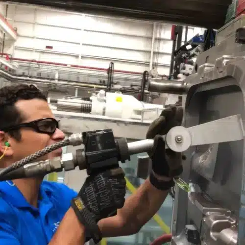
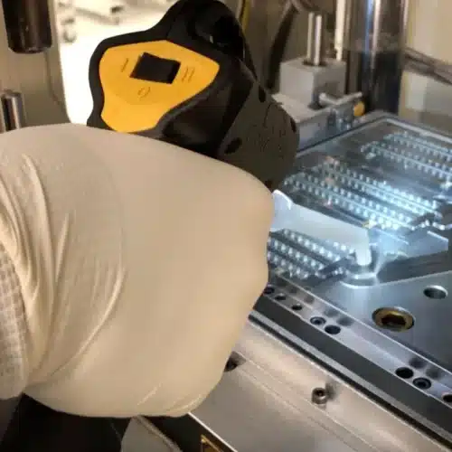

01
PLASTIC & INJECTION MOLD
플라스틱 · 사출금형


캐비티와 벤트에 축적되는
성형 잔류물을 세척합니다.
플라스틱 사출공정에서는 수지에서 발생하는 오프가스, 이형제, 안료와 성형 잔류물이 금형의 캐비티와 벤트, 복잡한 형상에 반복적으로 축적될 수 있습니다. Cold Jet 자료에 따르면 이러한 오염은 벤트 막힘, 쇼트, 플레이트아웃, 번, 플래시 같은 성형 문제의 원인이 됩니다.
드라이아이스 세척은 금형 표면을 연마하는 방식이 아니기 때문에 정밀한 캐비티와 복잡한 형상을 고려해야 하는 사출금형 세척에 활용할 수 있습니다. 작은 오리피스와 마이크로 캐비티를 가진 정밀 금형, 텍스처 금형, PET 프리폼 금형 등에도 적용된 사례가 있습니다.
적용 조건에 따라 금형을 장비에서 완전히 분리하지 않고 성형 온도 상태에서 세척할 수 있는 경우도 있어, 세척을 위한 냉각·분해·재조립에 드는 정비시간을 줄이는 데 도움이 될 수 있습니다.
대표 대상
- 사출금형 (Injection Mold)
- 압축금형 (Compression Mold)
- 열성형 금형 (Thermoform)
- 블로우 금형
- PET 프리폼 금형
- LSR · LIM 금형
- 압출 다이 (Extrusion Die)


 코어박스 벤트
코어박스 벤트